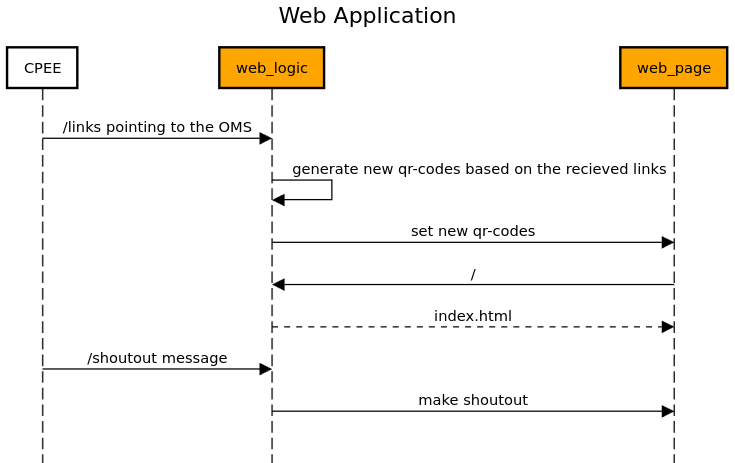

QR Code Web Application¶
The
qr_code_websitemodule is a web application that allows CPEE to set a new URL pointing to the OMS and containing the drinks in the request. The application fetches all URLs and generates QR codes based on the URL. The QR codes are then displayed on the website. The application also provides multi-threaded fetch logic that fetches all new, in-process and completed orders and displays them in three different tables. Finally, the application provides a way to add shoutout messages that are then read out to the user.The figure below shows the high-level architecture of the
qr_code_websitemodule: The weblogic receives new links that are encoded as qr-codes by the web_logic to be later displayed by the web_site. The cpee can send a shoutout message to the web_site that will be read out to the user.The
qr_code_websitesupports a RESTful API implemented using Flask. See below for detailed documentation of its API endpoints and functionality.API Endpoints:
Index Page Endpoint
Endpoint:
/Method:
GETDescription: Renders the homepage of the application, displaying QR codes for each drink. These QR codes are generated dynamically based on the drink links stored in the application.
Example request:
GET / HTTP/1.1 Host: example.com
Success Response:
The server responds with the rendered index.html page, which includes QR codes for the drinks.
Set Shoutout Message
Endpoint:
/shoutoutMethod:
PUTDescription: Sets a shoutout message for an order, which can be used for notifying when a drink order is ready for pickup.
Request Body:
PUT /shoutout HTTP/1.1 Host: example.com Content-Type: application/x-www-form-urlencoded drink=Gin&name=John+Doe&order_id=123Success Response:
HTTP/1.1 200 OK Content-Type: application/json { "message": "Text spoken successfully" }Get Shoutout Message
Endpoint:
/shoutout_getMethod:
GETDescription: Retrieves the last set shoutout message, removing it from the message queue.
Success Response:
If a shoutout message is available:
HTTP/1.1 200 OK Content-Type: application/json { "message": "Gin Tonic with ID: 123 is ready, please pick it up" }If no messages are available:
HTTP/1.1 200 OK Content-Type: application/json { "message": "" }Set Drink Links
Endpoint:
/linksMethod:
PUTDescription: Stores or updates the links associated with drinks. Use this function to update the available drinks that are beeing displayed on the website as qr codes.
- Request Fields:
URLs: (required) A JSON-encoded array of URL strings.Success Response:
HTTP/1.1 200 OK Content-Type: application/json { "message": "URLs added successfully" }Module Implementation:
- qr_code_website.generate_qr_code(link)¶
This function is used to generate a qr code from a given link :param link: The link to generate the qr code from :return: The qr code as a base64 encoded string
- qr_code_website.get_drink_data()¶
This function is used to get the links for the drinks :return: The links for the drinks
- qr_code_website.index()¶
This function is used to render the index.html file and generate qr codes for the drinks :return: The index.html file with the qr codes
- qr_code_website.set_drink_data()¶
This function is used to set the links for the drinks :return: A message that the links have been set
- qr_code_website.shoutout()¶
This function is used to set the shoutout message :return: A message that the shoutout message has been set
- qr_code_website.shoutout_get()¶
This function is used to get the shoutout message :return: The shoutout message
- qr_code_website.speak(text)¶
This function is used to speak a given text :param text: The text to speak :return: None